Minamiawaji, Hyogo: things to do, food and stays
Minamiawaji · Hyogo
Minamiawaji
Highlighted on the Hyogo map.
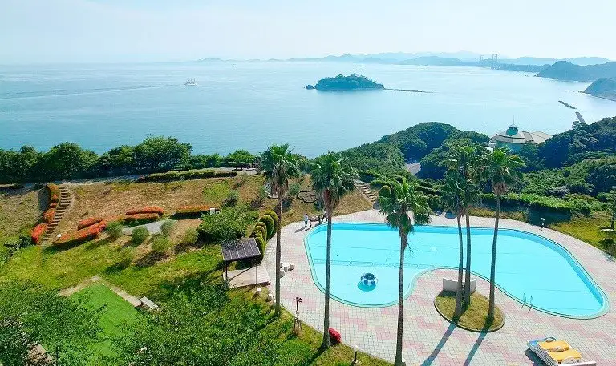
Stay
グランドメルキュール淡路島リゾート＆スパ
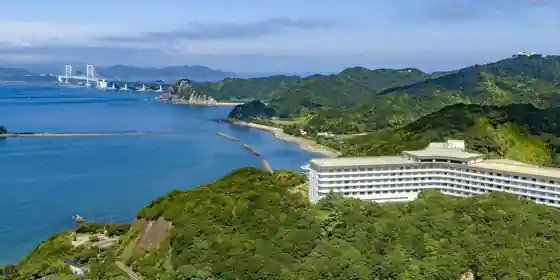
Grand Merukyuru Awaji Shima Resort & Supa
Resort hotel in Fukurahinoe, Minamiawaji with scenic views.
SolaVilla(そらヴィラ) 海テラス南あわじ
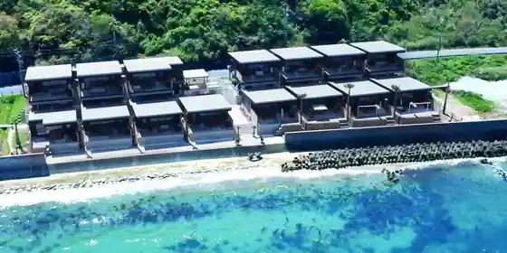
SolaVilla(Sora Villa) Umi Terrace Minami Awaji
Inn in Minato, Minamiawaji with open-air baths and scenic views.
あわじ浜離宮
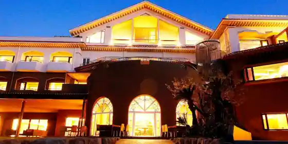
Awaji Hamarikyu
ホテルニューアワジ プラザ淡路島
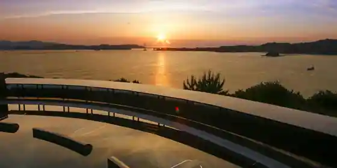
Hotel Nyuawaji Plaza Awaji Shima
Hotel in Omanfukiage, Minamiawaji with open-air baths.
あわじ浜離宮 別荘 鐸海
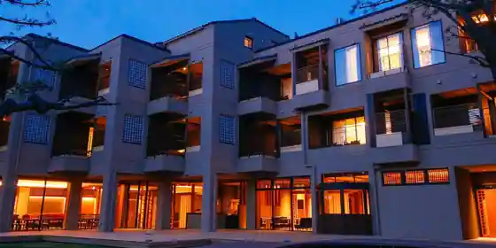
Awaji Hamarikyu Besso Taku Umi
サンセットビューホテル けひの海
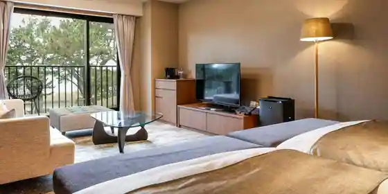
Sansettobyu Hotel Kehino Umi
Hotel at Bihada Onsen in Matsuhokotsumichi, Minamiawaji with scenic views.
VILLA RESFEEL
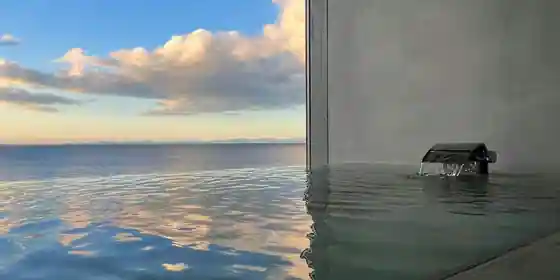
VILLA RESFEEL
湊小宿 海の薫とAWAJISHIMA
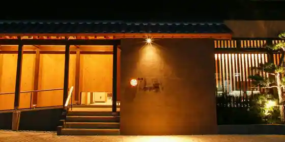
Minato Sho Yado Umi No Kaoto AWAJISHIMA
+S Villaxury
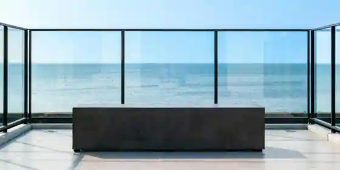
+S Villaxury
cave villa banco
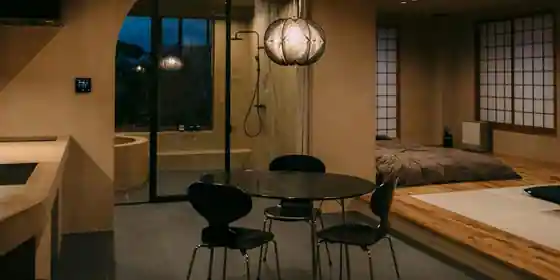
cave villa banco
Nook ~ヌーク~
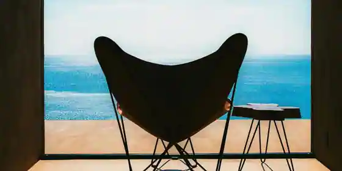
Nook ~ Nuku ~
フェアフィールド･バイ･マリオット･兵庫淡路島福良
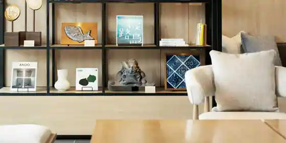
Feafirudo Feafirudo Bai Bai Mariotto Mariotto Hyogo Awaji Shima Fukura
Dining
南海荘
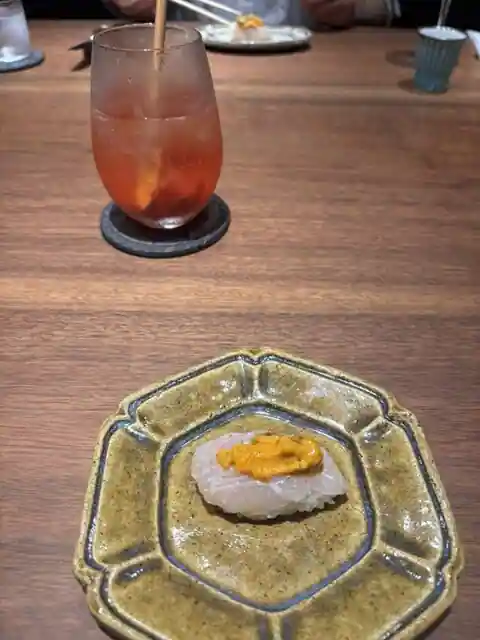
Nankai So
Ｇ．エルム
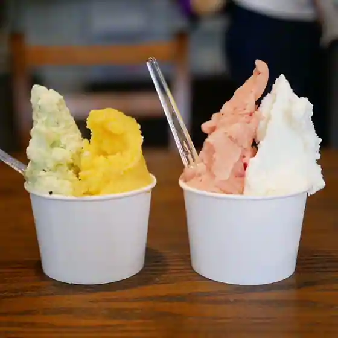
G. Erumu
うめ丸旅館
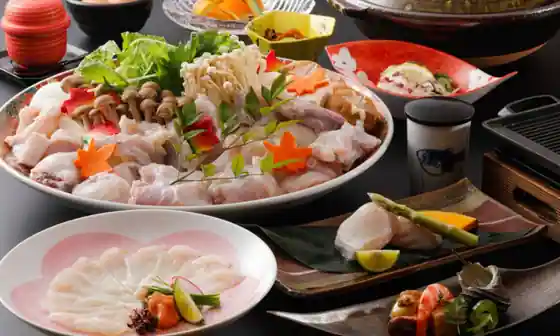
Ume Maru Ryokan
ひらまつ食堂
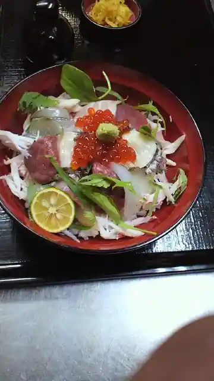
Hiramatsu Shokudo
あわじ島バーガー 淡路島オニオンキッチン 本店
Awaji Shima Burger Awaji Shima Onion Kitchen Hon
絶景レストラン うずの丘
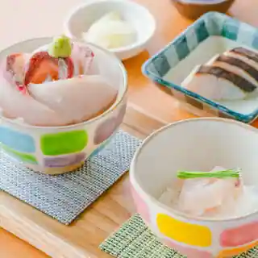
Zekkei Restaurant Uzuno Oka
玉ねぎ倉庫跡地 志知カフェ
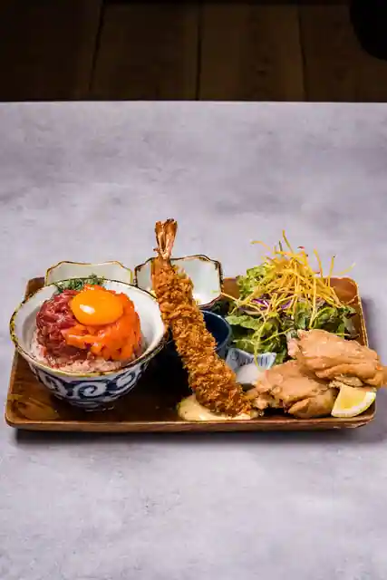
Tama Negi Soko Atochi Shichi Cafe
ベルデ テネロ
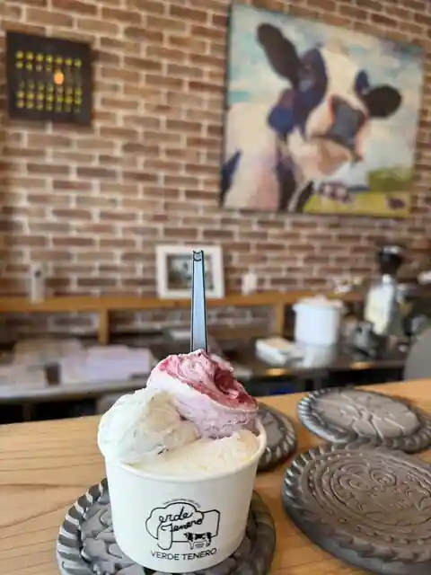
Berude Tenero
あわじ島バーガー 淡路島オニオンキッチン うずの丘店
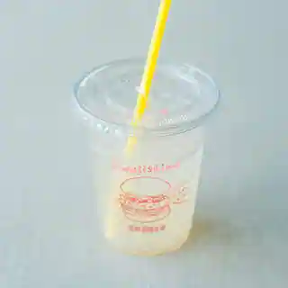
Awaji Shima Burger Awaji Shima Onion Kitchen Uzuno Oka
山武水産
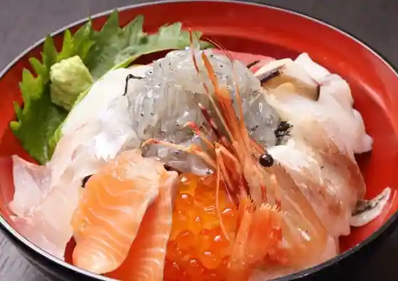
Sanbu Suisan
淡路島しふぉんの店 fortune
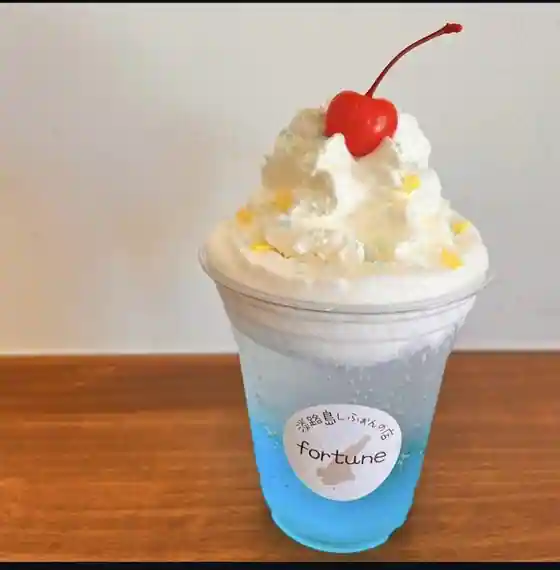
Awaji Shima Shifonno fortune
あわじ島バーガー 淡路島オニオンキッチン うずまちテラス店
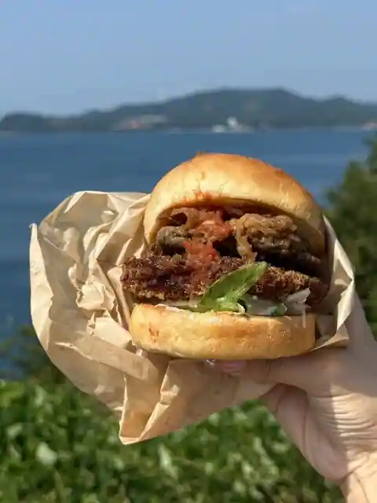
Awaji Shima Burger Awaji Shima Onion Kitchen Uzumachi Terrace
囲炉裏食堂うずしお
Irori Shokudo Uzushio
淡路島 さと味
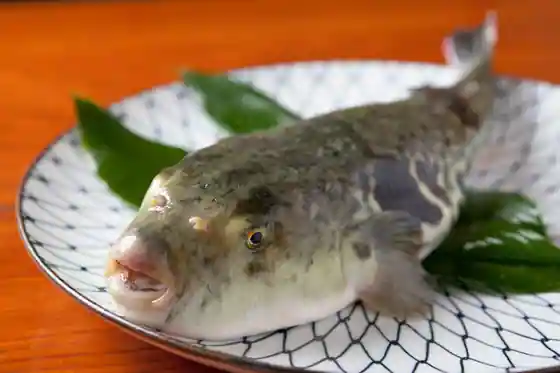
Awaji Shima Sato Aji
松葉寿司
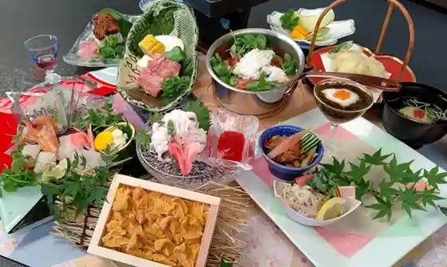
Matsuba Sushi
淡路島南パーキングエリア（上り）フードコート
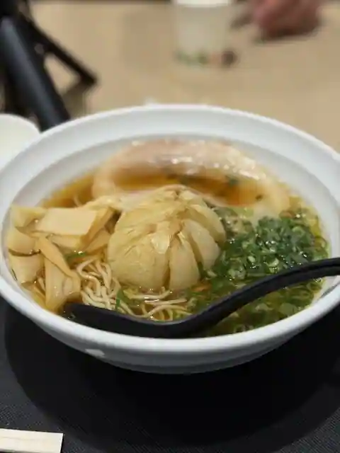
Awaji Shima Minami Pakingueria (Nobori) Fudokoto
海鮮料理 きとら 洲本店
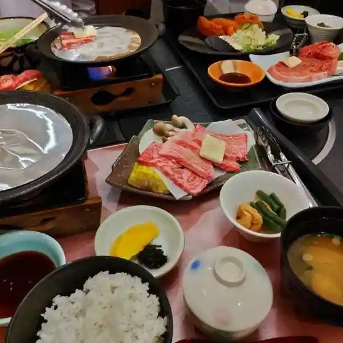
Kaisen Ryori Kitora Sumoto
トラットリア アマランチャ
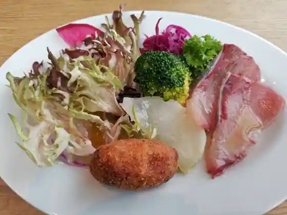
Trattoria Amarancha
石窯ピザ丸
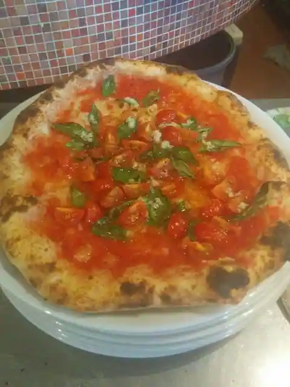
Ishigama Pizza Maru
コアラ島バーガー
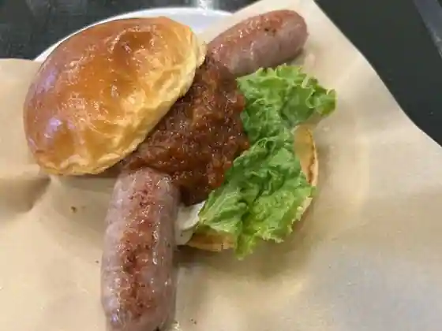
Koara Shima Burger
練物屋 福良店
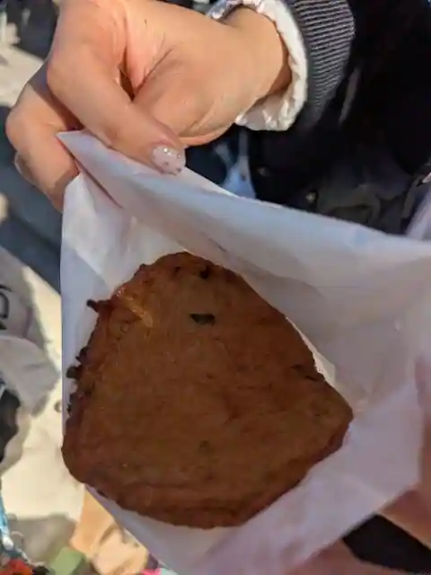
Nerimono Ya Fukura
味処 とっくり
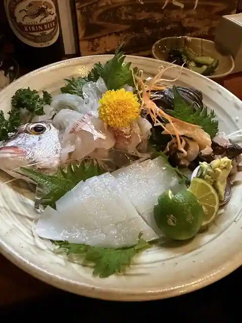
Ajidokoro Tokkuri
さかな食堂 フレッシュきたの
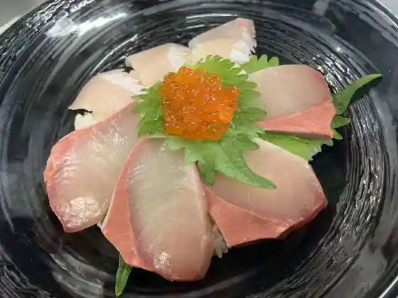
Sakana Shokudo Furesshu Kitano
淡路島ばぁむ工房 maaru factory
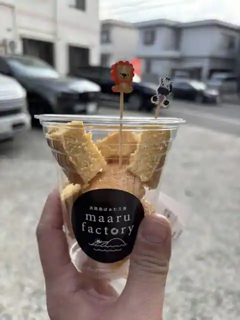
Awaji Shima Bamu Kobo maaru factory
Sights
Uzu no Oka Dai Naruto Hashi Memorial Museum
Minamiawaji Oriivu Sono
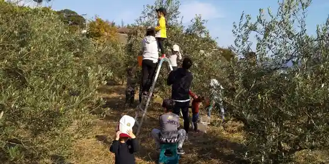
Minamiawaji Onsen Sato
Yoshi no Matsubara
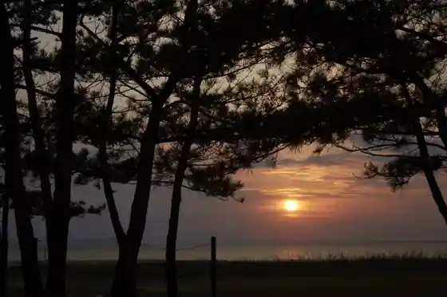
Awaji Ja no Hire Autodoa Resort
Awaji Farm Park Ingu Land no Oka
Awaji Ningyo Za
Awaji Shima Ranch
Roadside Station Uzushio